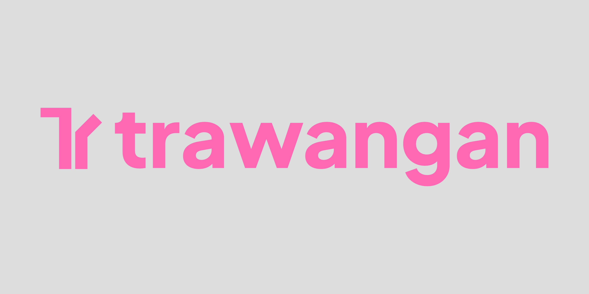

Melihat Menembus Kabut
Manipulasi Pasar.
Terminal analisis teknikal desktop native ultra-ringan berbasis Tauri v2 & Rust. Nikmati rendering grafik WebGL2 120 FPS, eksekusi Pine Script v6 lokal, indikator tanpa batas, dan privasi offline penuh tanpa biaya langganan.

Filosofi di Balik trawangan
Diambil dari etimologi bahasa Jawa kuno penerawangan (ꦠꦿꦮꦔꦤ꧀), yang merepresentasikan kemampuan mata batin untuk melihat menembus kabut manipulasi, ilusi kasat mata, dan kekacauan duniawi.
Di tengah ekosistem pasar kripto modern yang bising—di mana pergerakan harga sering kali dikaburkan oleh manipulasi likuidasi tersembunyi dan platform komersial mengunci alat analisis dasar di balik *paywall* langganan mahal—trawangan diciptakan. Kami mendedikasikan aplikasi ini murni untuk Pure Charting Scope: perangkat analisis grafis objektif, jernih, dan tajam yang mengembalikan kedaulatan data sepenuhnya ke tangan trader.
Mengapa Berlangganan jika Analisis Bisa Bebas?
Bandingkan kebebasan analisis teknikal di trawangan dengan platform charting komersial berbayar.
| Fitur & Kapabilitas |
trawangan
|
Platform Komersial Gratis |
|---|---|---|
| Indikator per Kanvas Kombinasi indikator teknikal simultan | Tanpa Batas (Unlimited) | Terbatas (Maks. 2 - 3 indikator) |
| Kapasitas Watchlist Jumlah aset & simbol yang bisa dipantau | Tanpa Kuota (Unlimited) | Dibatasi kuota ketat |
| Eksekusi Pine Script v6 Menjalankan indikator & strategi kustom | Penuh (Worker Lokal PineTS) | Dibatasi kuota server & paywall |
| Data Feed Multi-Exchange Binance, Bitunix, Hyperliquid, Coinbase | Real-time WebSocket Langsung | Data sering tertunda / Berbayar |
| Privasi & Penyimpanan Data Alat gambar, indikator, dan riwayat analisis | 100% Offline Lokal (SQLite) | Pelacak cloud, telemetri, & iklan |
| Konsumsi Memori RAM Beban sistem saat dijalankan berjam-jam | Ultra-Ringan (~30-50 MB) | Boros RAM (500 MB - 1.5 GB Electron) |
| Biaya Langganan Biaya penggunaan bulanan atau tahunan | Rp 0 / $0 Selamanya Open Source MIT License | $14.95 - $59.95 / bulan Perlu tagihan berulang |
Dibangun untuk Kecepatan dan Presisi
Lihat langsung antarmuka desktop trawangan yang dirancang dengan estetika minimalis dan responsivitas instan.
Direkayasa untuk Kinerja Native Sejati
Fondasi teknologi modern yang menjamin kecepatan, keamanan, dan kebebasan analisis Anda.
Native Desktop Tauri v2
Dibangun dengan arsitektur native Rust dan WebView2 sistem. RAM hanya ~30-50 MB, tanpa bloat Chromium yang membuat laptop Anda panas.
WebGL2 Charting Engine
Grafik candlestick akselerasi hardware menggunakan LuxAlgo Vela Engine. Scroll, pan, dan zoom instan dengan frame-rate hingga 120 FPS.
Pine Script v6 Worker
Eksekusi skrip PineTS v6 terisolasi pada Web Worker terpisah. UI tetap responsif mulus saat melakukan kalkulasi indikator matematis berat.
Penyimpanan Offline SQLite
Garis gambar (drawings), layout chart, dan watchlist tersimpan secara aman di database SQLite lokal di layer Rust. Tanpa akun, tanpa cloud leak.
Multi-Exchange Real-Time
Dukungan data live WebSocket dan REST fallback langsung ke Binance, Bitunix, Hyperliquid, dan Coinbase tanpa perantara API pihak ketiga.
Pure Charting Scope
Bebas godaan tombol order dan koneksi modal berisiko. Dedikasi 100% pada ketajaman visualisasi analisis teknikal dan pengujian strategi.
Mulai Menerawang Pasar Sekarang
Dapatkan installer biner resmi bebas paywall untuk sistem operasi Anda.